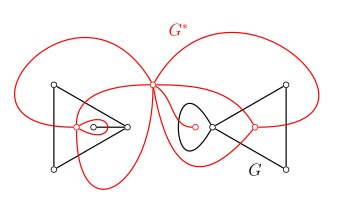
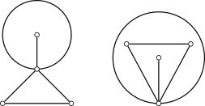
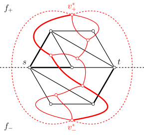

OI Wiki · prijevod · Teorija grafovaOI Wiki · translation · Graph theory
Planarni grafoviPlanar graphs
Sadržaj
Ovaj članak uvodi planarne (ravninske) grafove i srodne pojmove.
Planarni grafovi
Ako se graf \(G\) može nacrtati u ravnini \(S\) tako da se bridovi sijeku samo u vrhovima, kažemo da se \(G\) može uložiti u ravninu \(S\) i da je \(G\) planaran graf (planar graph). Nacrtani graf bez sjecišta bridova zove se ravninski prikaz ili ravninsko ulaganje (planar embedding) grafa \(G\). Takvo ravninsko ulaganje planarnog grafa zove se i ravninski graf (plane graph).
„Planaran graf” i „ravninski graf”
U različitim tekstovima značenje izraza „planaran graf” može se razlikovati. U definiciji iz ovog članka planaran graf je grafovsko-teorijski objekt koji se u ravninu može uložiti na različite načine; ravninski graf pak je geometrijski objekt koji, osim grafovske strukture, zadaje i način crtanja grafa. Istom planarnom grafu obično odgovara više ravninskih grafova. Zato ćemo za tvrdnje koje ovise samo o grafovskoj strukturi rabiti izraz „planaran graf”, a za one koje ovise i o načinu ulaganja u ravninu izraz „ravninski graf”.
Evo jednostavnih primjera planarnih grafova:
(lijevo: leptir-graf; desno: potpuni graf \(K_4\) reda \(4\))
Evo jednostavnih primjera neplanarnih grafova:
(lijevo: potpuni graf \(K_5\) reda \(5\); desno: potpuni bipartitni graf \(K_{3,3}\) s po \(3\) vrha u svakoj strani)
Svojstva
U ovom odjeljku iznosimo svojstva ravninskih grafova.
Strane i njihovi stupnjevi
Neka je \(G\) ravninski graf; bridovi grafa \(G\) dijele ravninu u kojoj \(G\) leži na nekoliko područja, a svako se područje zove strana (face) grafa \(G\). Neomeđena strana zove se beskonačna strana (unbounded face) ili vanjska strana (external face), a omeđene se zovu konačne ili unutarnje strane. Svaki ravninski graf ima točno jednu vanjsku stranu.
Zatvorena šetnja sastavljena od svih bridova koji okružuju neku stranu zove se rub (boundary) te strane, a za bridove ruba kažemo da su incidentni (incident) s tom stranom. Duljina ruba zove se stupanj (degree) strane. Pri računanju stupnja strane svaki se most broji dvaput. Zbroj stupnjeva svih strana ravninskog grafa jednak je \(2\) puta broju bridova \(|E|\).
U ravninskom grafu rub strane stupnja \(1\) odgovara petlji, a rub strane stupnja \(2\) obično paru višestrukih bridova1. U jednostavnom povezanom ravninskom grafu s \(|V|\ge 3\) vrhova sve strane imaju stupanj barem \(3\).
Eulerova formula
Važno svojstvo ravninskih grafova je Eulerova formula (Euler's formula). Ona daje vezu između broja vrhova \(|V|\), broja bridova \(|E|\) i broja strana \(|F|\) grafa.
Eulerova formula
Za povezan ravninski graf \(G\) vrijedi
Dokaz
Primjenjujemo matematičku indukciju po broju strana \(|F|\). Baza je \(|F|=1\). Tada ravninski graf ima samo vanjsku stranu i svi su bridovi mostovi. Dakle, graf \(G\) je stablo, pa nužno vrijedi \(|E|=|V|-1\); uvrštavanjem u Eulerovu formulu vidimo da ona vrijedi. Pretpostavimo da Eulerova formula vrijedi za ravninske grafove s \(|F| = k\) strana. U ravninskom grafu \(G\) s \(|F|=k + 1\) strana nužno postoji brid \(e\) koji nije most; on je zajednički brid dviju različitih strana. Uklanjanjem brida \(e\) iz grafa dobivamo graf \(G-e\) s \(|V|\) vrhova, \(|E|-1\) bridova i \(|F|-1\) strana. Po pretpostavci indukcije za graf \(G-e\) vrijedi Eulerova formula, tj. \(|V|-(|E|-1)+(|F|-1)=2\), a sređivanjem dobivamo Eulerovu formulu za graf \(G\). Dakle, po matematičkoj indukciji Eulerova formula vrijedi za sve ravninske grafove.
Korolar
Za ravninski graf \(G\) s \(k\) komponenata povezanosti vrijedi
Dokaz
Svaka komponenta povezanosti grafa \(G\) je ravninski graf, ali te komponente dijele istu vanjsku stranu. Primijenimo li Eulerovu formulu izravno na svaku komponentu i zbrojimo, ukupan broj vrhova i ukupan broj bridova bit će točni, ali će ukupan broj strana biti veći za \((k-1)\), jer je jedinstvena vanjska strana ukupno izbrojena \(k\) puta. Uzmemo li u obzir tu korekciju, dobivamo \(|V|-|E|+|F| = 2k - (k-1) = k+1\).
Iz toga se može izvesti veza između broja bridova i broja vrhova ravninskog grafa.
Teorem
Za ravninski graf \(G\) s \(k\) komponenata povezanosti, ako svaka strana grafa \(G\) ima stupanj barem \(l \ge 3\), vrijedi
Dokaz
Budući da je stupanj svake strane grafa \(G\) barem \(l\), zbroj stupnjeva svih strana je barem \(l|F|\), tj. \(2|E| \ge l|F|\). Uvrštavanjem korolara Eulerove formule \(|V| - |E| + |F| = k + 1\) dobivamo
Koristeći \(l \ge 2\) i rješavajući po \(|E|\) dobivamo
Korolar
Neka je \(G\) jednostavan planaran graf s \(|V|\ge 3\). Tada vrijedi
Dokaz
Kad je \(G\) povezan, sve strane imaju stupanj barem \(3\). Uzmemo li u gornjem teoremu \(k=1\) i \(l=3\), dobivamo \(|E|\le 3|V|-6\).
Kad \(G\) nije povezan, razlikujemo dva slučaja:
- Ako postoji komponenta povezanosti s barem \(3\) vrha, za svaku komponentu s barem \(3\) vrha možemo zasebno postaviti nejednakost \(|E_i|\le 3|V_i|-6\). Za komponente s manje od \(3\) vrha sigurno vrijedi \(|E_i|\le |V_i| \le 3|V_i|\). Zbrajanjem nejednakosti za sve komponente dobivamo \(|E|\le 3|V|-6\).
- Ako sve komponente povezanosti imaju manje od \(3\) vrha, u cjelini sigurno vrijedi \(|E|\le |V|\). Kako za \(|V|\ge 3\) vrijedi \(|V|\le 3|V|-6\), i dalje vrijedi \(|E|\le 3|V|-6\).
Time je tvrdnja dokazana.
Ovaj korolar pokazuje da su jednostavni planarni grafovi rijetki grafovi.
Dualni graf
Svaki ravninski graf ima odgovarajući (geometrijski) dualni graf.

Neka je \(G\) ravninski graf; graf \(G^*\) crtamo ovako:
- Unutar svake strane \(f_i\) grafa \(G\) nacrtamo vrh \(v_i^*\).
- Za svaki brid \(e\) grafa \(G\), ako \(e\) leži na zajedničkom rubu strana \(f_i\) i \(f_j\), nacrtamo brid \(e^*\) koji spaja \(v_i^*\) i \(v_j^*\) tako da siječe \(e\) točno jednom i ne siječe druge bridove grafa \(G\) ni grafa \(G^*\). Posebno, ako se \(e\) pojavljuje samo na rubu jedne strane \(f_i\), nacrtamo petlju u vrhu \(v_i^*\) koja siječe \(e\).
Tako dobiven graf \(G^*\) zove se dualni graf (dual graph) grafa \(G\).
Teorem
Neka je graf \(G^*\) dualni graf ravninskog grafa \(G\). Tada je graf \(G^*\) povezan ravninski graf. Štoviše, graf \(G^{**}\) izomorfan je grafu \(G\) ako i samo ako je \(G\) povezan.
Dokaz
Da je graf \(G^*\) ravninski, jamči njegova konstrukcija. Treba još dokazati da je graf \(G^*\) povezan. Za bilo koja dva vrha \(v^*_i,v^*_j\) grafa \(G^*\) neka dužina u ravnini koja spaja \(v^*_i\) i \(v^*_j\) redom prolazi kroz strane i bridove grafa \(G\) \(f_i,e_{s_1},f_{s_1},\cdots,f_{s_{r-1}},e_{s_r},f_j\); njima redom odgovaraju vrhovi i bridovi dualnog grafa \(v_i^*,e_{s_1}^*,v^*_{s_1},\cdots,v^*_{s_{r-1}},e^*_{s_r},v^*_j\). Po konstrukciji grafa \(G^*\) susjedni vrhovi i bridovi u tom nizu su incidentni, pa niz opisuje šetnju u grafu \(G^*\). Dakle, graf \(G^*\) je povezan.
Graf \(G^{**}\) je dualni graf grafa \(G^*\), pa je nužno povezan. Stoga je nužan uvjet za izomorfnost \(G\) i \(G^{**}\) da je graf \(G\) povezan. Preostaje dokazati da je taj uvjet i dovoljan. Za to je dovoljno pokazati da, kad je graf \(G\) povezan, graf \(G\) zadovoljava zahtjeve konstrukcije dualnog grafa grafa \(G^*\). Budući da bridovi grafa \(G^*\) i bridovi grafa \(G\) prirodno odgovaraju jedni drugima, dovoljno je dokazati da svaka strana grafa \(G^*\) sadrži točno jedan vrh grafa \(G\). Za bilo koju stranu \(f^*\) grafa \(G^*\) neka je \(e^*\) brid na njezinu rubu; tada se jedan od krajeva odgovarajućeg brida \(e\) grafa \(G\) nužno nalazi unutar strane \(f^*\), pa strana \(f^*\) sadrži barem jedan vrh grafa \(G\). Budući da su i \(G^*\) i \(G\) povezani, vrijedi Eulerova formula; a kako \(G\) i \(G^*\) imaju jednak broj bridova, a broj strana grafa \(G\) jednak je broju vrhova grafa \(G^*\), broj vrhova grafa \(G\) jednak je broju strana grafa \(G^*\). Dakle, svaka strana grafa \(G^*\) sadrži točno jedan vrh grafa \(G\). Tvrdnja je dokazana.
Između strukture ravninskog grafa i njegova dualnog grafa postoji mnogo podudarnosti:
- Strane u \(G\) odgovaraju vrhovima u \(G^*\), bridovi u \(G\) odgovaraju bridovima u \(G^*\), a vrhovi u \(G\) odgovaraju stranama u \(G^*\).
- Petlje u \(G\) odgovaraju mostovima u \(G^*\), a petlje u \(G^*\) odgovaraju mostovima u \(G\).
- Rezni skupovi bridova u \(G\) odgovaraju zatvorenim šetnjama u \(G^*\), a zatvorene šetnje u \(G^*\) odgovaraju reznim skupovima bridova u \(G\).
Treba paziti na to da je pojam dualnog grafa definiran samo za konkretan ravninski graf, a ne može se definirati za proizvoljan planaran graf. Zapravo, dualni grafovi dvaju izomorfnih ravninskih grafova ne moraju biti izomorfni. Drugim riječima, dualni grafovi različitih ravninskih ulaganja istog grafa mogu se razlikovati.
Primjer
Na slici su dva izomorfna ravninska grafa čiji dualni grafovi nisu izomorfni.

Dualni grafovi nisu izomorfni zato što desni graf ima stranu stupnja 1, pa njegov dualni graf ima vrh stupnja 1, dok ga lijevi nema.
Prebacivanje problema na planarnom grafu na dualni graf ponekad olakšava rješavanje. Tipičan je primjer da se problem najmanjeg reza u planarnom grafu može pretvoriti u problem najkraćeg puta u dualnom grafu. Neka je \(G\) planaran graf s težinama na bridovima, a \(s,t\) dva njegova vrha; tražimo najmanji \(s\)-\(t\) rez.

Kao na slici, odabirom prikladnog ravninskog ulaganja postižemo da \(s,t\) leže na rubu vanjske strane grafa \(G\). Osim toga, dodamo zrake koje izlaze iz \(s\) i \(t\) i dijele vanjsku stranu na dva dijela, \(f_{+}\) i \(f_{-}\). Na temelju tog grafa izgradimo dualni graf i težine bridova pridružimo odgovarajućim bridovima dualnog grafa. Tada su putovi između vrhova koji u dualnom grafu \(G^*\) odgovaraju stranama \(f_{+}\) i \(f_{-}\) (debela crvena linija) u bijekciji s \(s\)-\(t\) reznim skupovima bridova grafa \(G\) (debela crna linija), i to s jednakim težinama. Tako, nalaženjem najkraćeg puta u dualnom grafu dobivamo najmanji \(s\)-\(t\) rez u grafu \(G\).
Česta je zabluda na temelju opisane pretvorbe tvrditi da je najmanji rez u ravninskom grafu jednak najkraćem putu u dualnom grafu. Zapravo to vrijedi samo kad postoji ravninsko ulaganje grafa \(G\) u kojem \(s,t\) leže na istoj strani; u natjecateljskim zadacima koji ispituju ovo gradivo zadani graf obično ima takvo ravninsko ulaganje i ono je zadano. Navodimo teorem kojim se može provjeriti njegovo postojanje.
Teorem
Za dva vrha \(s,t\) planarnog grafa \(G=(V,E)\) postoji ravninsko ulaganje grafa \(G\) u kojem \(s,t\) leže na istoj strani ako i samo ako je \((V,E \cup \{(s,t)\}\) planaran graf.
Dokaz
Ako postoji ravninsko ulaganje grafa \(G\) u kojem \(s,t\) leže na istoj strani, unutar te strane možemo dodati brid \((s,t)\) i graf ostaje planaran.
Ako je \((V, E \cup \{(s,t)\})\) planaran graf, u bilo kojem njegovu ravninskom ulaganju \(s,t\) leže na strani na kojoj je brid \((s,t)\). Nakon uklanjanja \((s,t)\) vrhovi \(s,t\) i dalje leže na istoj strani. Tvrdnja je dokazana.
Na primjer, dodavanjem brida \((s,t)\) u graf na slici dolje dobiva se neplanaran graf \(K_5\), pa takvo ravninsko ulaganje ne postoji i opisana pretvorba nije primjenjiva.
Daljnji rezultati
Naravno, o ravninskim grafovima postoji još mnogo poznatih rezultata. Ovdje ih kratko navodimo bez rasprave.
Teorem o četiri boje
Svaki ravninski graf (bez petlji) može se obojiti s \(4\) boje.
Fáryjev teorem
Jednostavan planaran graf uvijek ima ravninsko ulaganje u kojem su svi bridovi dužine.
Teorem (Wood)
Planaran graf ima najviše \(8|V|-16\) maksimalnih klika.
Teorem (Tutte)
Svaki \(4\)‑vršno povezan planaran graf je Hamiltonov.
Prepoznavanje
U ovom odjeljku raspravljamo kako za zadani graf odlučiti je li planaran.
Zabranjeni grafovi
Najklasičnija karakterizacija planarnih grafova daje se pomoću zabranjenih grafova (forbidden graph).
Najprije, \(K_5\) i \(K_{3,3}\) nisu planarni grafovi.
Teorem
\(K_5\) i \(K_{3,3}\) nisu planarni grafovi.
Dokaz
Ranije smo pokazali da jednostavan povezan ravninski graf s \(|V|\ge 3\) mora zadovoljavati
pri čemu je \(l\) najmanji stupanj strane. Za \(K_5\) vrijedi \(l=3,~|V|=5,~|E|=10\), pa se \(K_5\) ne može nacrtati kao ravninski graf. Za \(K_{3,3}\) vrijedi \(l=4,~|V|=6,~|E|=9\), pa se ni \(K_{3,3}\) ne može nacrtati kao ravninski graf.
Zapravo, upravo su to najmanje strukture koje graf čine neplanarnim. Drugim riječima, čim graf (na određeni način) ne sadrži ta dva grafa kao podstrukture, sigurno je planaran.
Prvi teorem o prepoznavanju planarnosti je teorem Kuratowskog. On rabi pojam homeomorfnosti grafova: ako su grafovi \(G_1\) i \(G_2\) izomorfni, ili postanu izomorfni nakon višestrukog umetanja ili uklanjanja vrhova stupnja \(2\), kažemo da su homeomorfni (homeomorphic). Time se može iskazati sljedeći rezultat:
Teorem Kuratowskog
Graf \(G\) je planaran ako i samo ako \(G\) ne sadrži podgraf homeomorfan s \(K_5\) ili \(K_{3,3}\).
Još jedan srodan teorem je Wagnerov teorem. On planarne grafove karakterizira pomoću operacije kontrakcije. Kontrakcija znači višestruko sažimanje jednog brida grafa u jedan vrh. Time se može iskazati sljedeći rezultat:
Wagnerov teorem
Graf \(G\) je planaran ako i samo ako \(G\) nema podgraf koji se može kontrahirati u \(K_5\) ili \(K_{3,3}\).
Da planarni grafovi ne sadrže takve podgrafove relativno je očito, pa je ključni dio obaju teorema dovoljnost odgovarajućeg uvjeta o zabranjenim grafovima. Budući da se podgraf homeomorfan s \(K_5\) ili \(K_{3,3}\) uvijek može kontrahirati u njih, dok obrat ne mora vrijediti, teorem Kuratowskog daje slabiji uvjet za planarnost koji je ujedno lakše provjeriti.
Algoritmi za ispitivanje planarnosti
Iako se ne čini lakim, za problem ispitivanja planarnosti zapravo postoji mnogo linearnih algoritama. No budući da su njihove implementacije obično prilično složene, gotovo se nikad ne pojavljuju na natjecanjima iz algoritama.
Najraniji linearni algoritam je Hopcroft–Tarjanov algoritam2, ali je njegova implementacija prilično složena. Algoritam de Fraysseix–Ossona de Mendez–Rosenstiehl (poznat i kao LR algoritam za planarnost)345 dodatno poboljšava tijek Hopcroft–Tarjanova algoritma i jedan je od trenutačno najboljih algoritama za ispitivanje planarnosti. Pythonova biblioteka NetworkX implementira upravo taj algoritam.
Još jedan jednako dobar algoritam je Boyer–Myrvoldov algoritam67. On u linearnom vremenu odlučuje je li zadani graf planaran. Štoviše, ako graf jest planaran, algoritam ispisuje ravninsko ulaganje; inače ispisuje podgraf Kuratowskog (tj. podgraf homeomorfan s \(K_5\) ili \(K_{3,3}\)). C++ biblioteka Boost implementira taj algoritam.
Više srodnih algoritama može se naći u literaturi navedenoj na kraju članka.
Posebni ravninski grafovi
U ovom odjeljku uvodimo nekoliko posebnih klasa planarnih grafova.
Maksimalni ravninski grafovi
Za jednostavan planaran graf \(G\), ako dodavanjem brida između bilo koja dva nesusjedna vrha dobiveni graf više nije planaran, kažemo da je \(G\) maksimalan planaran graf (maximal planar graph). Ravninsko ulaganje maksimalnog planarnog grafa zove se maksimalan ravninski graf.
Teorem
Maksimalan planaran graf \(G\) nužno je povezan. Štoviše, kad je broj vrhova \(|V|\ge 3\), graf \(G\) nema mostova.
Dokaz
Ako planaran graf \(G\) nije povezan, tada u bilo kojem njegovu ravninskom ulaganju možemo odabrati dva vrha iz različitih komponenata povezanosti i spojiti ih unutar vanjske strane; dobiveni graf očito je i dalje ravninski, što pokazuje da graf \(G\) nije maksimalan planaran graf. Dakle, ako je graf \(G\) maksimalan planaran graf, nužno je povezan.
Ako planaran graf \(G\) ima \(|V|\ge 3\) vrhova i \(G\) ima most \(e=(u,v)\), tada graf \(G - e\) dobiven uklanjanjem brida \(e\) ima točno dvije komponente povezanosti, a \(u,v\) pripadaju različitim komponentama. Pretpostavimo da komponenta koja sadrži \(v\) ima barem dva vrha. Tada možemo najprije nacrtati u ravnini komponentu \(G_1\) koja sadrži \(u\), odabrati bilo koju stranu \(f\) grafa \(G_1\) čiji rub sadrži \(u\) i nacrtati drugu komponentu \(G_2\) unutar strane \(f\). Budući da je \(G_2\) jednostavan graf, rub njegove vanjske strane sigurno nije petlja, pa postoji još barem jedan vrh \(w\neq u,v\). Spojimo li \(v,w\) s \(u\), dobivamo ravninski graf koji sadrži \(G\) kao podgraf. Dakle, graf \(G\) nije maksimalan planaran graf. Stoga maksimalan planaran graf s \(|V|\ge 3\) vrhova sigurno nema mostova.
Struktura maksimalnih ravninskih grafova može se opisati preciznije.
Teorem
Ravninski graf \(G\) s \(|V|\ge 3\) vrhova maksimalan je ravninski graf ako i samo ako je jednostavan i svaka mu strana ima stupanj \(3\).
Dokaz
Dovoljnost uvjeta je očita. Treba pokazati samo nužnost, tj. dokazati: u maksimalnom ravninskom grafu \(G\) s \(|V|\ge 3\) vrhova svaka strana ima stupanj \(3\). Budući da je graf \(G\) povezan jednostavan ravninski graf s \(|V|\ge 3\), sve strane imaju stupanj barem \(3\). Pretpostavimo li da tvrdnja ne vrijedi, postoji strana \(f\) čiji rub ima duljinu barem \(4\). Kako graf \(G\) nema mostova, taj rub može biti samo ciklus. Neka je taj ciklus \(v_1v_2v_3v_4\cdots v_1\). Ako \(v_1\) i \(v_3\) nisu susjedni, spajanje \(v_1\) i \(v_3\) unutar strane \(f\) ne narušava planarnost, što je u suprotnosti s maksimalnošću grafa \(G\); dakle \(v_1\) i \(v_3\) su susjedni; analogno, \(v_2\) i \(v_4\) su susjedni. No bridovi \((v_1,v_3)\) i \((v_2,v_4)\) ne pojavljuju se unutar strane \(f\). To znači da oba brida moraju biti izvan strane \(f\). Ali to je nemoguće: kako god ih nacrtali, ta se dva brida nužno sijeku. Dakle, u grafu \(G\) ne postoji strana stupnja većeg od \(3\). Tvrdnja je dokazana.
Korolar
Za graf \(G\) s \(|V|\ge 3\) vrhova uvijek vrijedi \(|E|=3|V|-6\) i broj strana \(|F|=2|V|-4\).
Budući da je u maksimalnom ravninskom grafu svaka strana omeđena trima bridovima, maksimalan ravninski graf zove se i ravninska triangulacija (plane triangulation).
Vanjskoplanarni grafovi
Neka je \(G\) planaran graf; ako postoji ravninsko ulaganje \(\tilde{G}\) grafa \(G\) takvo da svi vrhovi grafa \(G\) leže na rubu jedne strane grafa \(\tilde{G}\), kažemo da je \(G\) vanjskoplanaran graf (outerplanar graph). To se ulaganje zove i vanjskoravninsko ulaganje ili vanjskoravninski graf. Obično se strana čiji rub prolazi svim vrhovima crta kao vanjska strana.
Svaki vanjskoplanaran graf je planaran, ali obrat ne mora vrijediti. I vanjskoplanarni grafovi mogu se karakterizirati zabranjenim grafovima.
Teorem
Graf \(G\) je vanjskoplanaran ako i samo ako \(G\) ne sadrži podgraf homeomorfan s \(K_4\) ili \(K_{2,3}\).
Za vanjskoplanarne grafove također se može govoriti o maksimalnim vanjskoplanarnim grafovima. Za jednostavan vanjskoplanaran graf \(G\), ako dodavanjem brida između bilo koja dva nesusjedna vrha dobiveni graf više nije vanjskoplanaran, kažemo da je \(G\) maksimalan vanjskoplanaran graf (maximal outerplanar graph). Vanjskoravninsko ulaganje maksimalnog vanjskoplanarnog grafa zove se maksimalan vanjskoravninski graf. Maksimalan vanjskoravninski graf zapravo je triangulacija mnogokuta u ravnini.
Teorem
Maksimalan vanjskoravninski graf \(G\) s \(|V|\ge 3\) vrhova, u kojem svi vrhovi leže na rubu vanjske strane, tada graf \(G\) ima točno \(|V|-2\) unutarnjih strana.
Dokaz
Primjenjujemo matematičku indukciju po \(|V|\). Baza je \(|V|=3\). Tada je graf \(G\) trokut i ima samo \(1\) unutarnju stranu, pa tvrdnja vrijedi. Pretpostavimo da tvrdnja vrijedi za \(|V| = k\). Treba dokazati da vrijedi i za \(|V| = k+1\).
Najprije, u grafu \(G\) sigurno postoji vrh stupnja \(2\). U suprotnom bi svaki vrh, osim sa susjednim vrhovima na rubu vanjske strane, morao biti spojen i s nekim trećim vrhom. Numerirajmo vrhove na rubu vanjske strane redom i za svaki \(i = 1,2,\cdots,k+1\) definirajmo \(f(i)\) kao najmanji broj vrha spojenog s vrhom \(i\) čiji broj nije susjedan s njim. Razmotrimo moguće vrijednosti \(f(i)\). Najprije, \(1 < f(1)\). Budući da je vrh \(1\) već spojen s \(f(1)\), spojnica vrha \(2\) i \(f(2)\) ne može prijeći brid \((1,f(1))\), pa nužno vrijedi \(1 < 2 < f(2) < f(1)\). Analogno, \(2 < 3 < f(3) < f(2)\). Budući da je vrhova konačno mnogo, taj postupak sužavanja mora stati nakon konačno mnogo koraka. Neka je \(i^*\) najveći broj \(i\) za koji vrijedi \(1 < \cdots < i-1 < i < f(i) < f(i-1) < \cdots < f(1)\). Budući da vrhovi \(i^*\) i \(f(i^*)\) nisu susjedni, nužno vrijedi \(i^* < i^* + 1 < f(i^*)\). Ponavljanjem prethodnog rasuđivanja i dalje bi trebalo vrijediti \(i^* < i^*+1 < f(i^*+1) < f(i^*)\), što je u suprotnosti s maksimalnošću \(i^*\). Ta kontradikcija pokazuje da u grafu \(G\) nužno postoji vrh stupnja \(2\).
Neka je \(v\) takav vrh stupnja \(2\). Uklanjanjem tog vrha iz grafa \(G\) dobivamo vanjskoravninski graf \(G-v\) s \(k\) vrhova. On je nužno maksimalan vanjskoravninski graf, jer bi se inače svaki dopušteni način dodavanja brida u njemu mogao primijeniti i na graf \(G\). Po pretpostavci indukcije graf \(G-v\) ima točno \(k-2\) unutarnje strane, a uklanjanjem vrha \(v\) nestala je točno jedna unutarnja strana grafa \(G\). Dakle, graf \(G\) ima \(k-1\) unutarnjih strana. Tvrdnja je dokazana.
Teorem
Vanjskoravninski graf \(G\) s \(|V|\ge 3\) vrhova, u kojem svi vrhovi leže na rubu vanjske strane, tada je graf \(G\) maksimalan vanjskoravninski graf ako i samo ako je rub vanjske strane grafa \(G\) ciklus duljine \(|V|\), a rubovi svih unutarnjih strana ciklusi duljine \(3\).
Dokaz
Dovoljnost je očita. Naime, promotrimo spajanje dvaju nesusjednih vrhova na rubu vanjske strane. Ako se spoje unutar vanjske strane, svi vrhovi više ne mogu ležati na rubu jedne strane; inače spojnica nužno siječe rub neke unutarnje strane.
Dokažimo sada nužnost. Pretpostavimo da rub vanjske strane \(v_1v_2v_3\cdots v_nv_1~(n = |V|)\) grafa \(G\) nije ciklus. Tada on neki vrh prolazi više puta, tj. postoje \(i\neq j\) s \(i-j\neq\pm 1\pmod{n}\) takvi da je \(v_i=v_j\). Bez smanjenja općenitosti neka je \(1 < i < j < n\). Tada se bridovi incidentni s \(v_{i-1}\) mogu nalaziti samo unutar omeđenog područja koje zatvara zatvorena šetnja \(v_jv_{j+1}\cdots v_nv_1\cdots v_{i-1}v_i\), a bridovi incidentni s \(v_{i+1}\) samo unutar omeđenog područja koje zatvara zatvorena šetnja \(v_iv_{i+1}\cdots v_{j-1}v_{j}\), pa \(v_{i-1}\) i \(v_{i+1}\) ne mogu biti susjedni. Unutar vanjske strane možemo dodati brid \(e\) koji spaja \(v_{i-1}\) i \(v_{i+1}\) i dobiti graf \(G+e\). On je očito također ravninski graf i rub njegove vanjske strane sadrži sve vrhove. To je u suprotnosti s maksimalnom vanjskoravninskošću grafa \(G\). Dakle, vanjska strana grafa \(G\) nužno je ciklus duljine \(|V|\). Razlog zašto su rubovi unutarnjih strana grafa \(G\) ciklusi duljine \(3\) isti je kao kod maksimalnih ravninskih grafova pa ga ne ponavljamo.
Korolar
Za maksimalan vanjskoravninski graf \(G\) s \(|V|\ge 3\) vrhova vrijedi:
- \(|E|=2|V|-3\).
- \(G\) ima barem \(3\) vrha stupnja najviše \(3\) i barem \(2\) vrha stupnja \(2\).
- Vršna povezanost grafa \(G\) je \(2\).
Zadaci
- Luogu P3209 [HNOI2010] Ispitivanje planarnosti
- Luogu P3249 [HNOI2016] Rudnik
- Luogu P4001 [ICPC-Beijing 2006] Vuk lovi zečeve
- Luogu P4073 [WC2013] Planaran graf
- Luogu P7295 [USACO21JAN] Paint by Letters P
Literatura i bilješke
- Planar graph - Wikipedia
- Planarity testing - Wikipedia
- Bondy, John Adrian, and Uppaluri Siva Ramachandra Murty. Graph theory with applications. Vol. 290. London: Macmillan, 1976.
- Diestel, Reinhard. Graph theory. Vol. 173. Springer Nature, 2025.
- Patrignani, Maurizio. "Planarity Testing and Embedding." (2013): 1-42.
-
No to nije jedina mogućnost. Dvije ugniježđene petlje također tvore stranu stupnja 2. Osim toga, postojanje strane stupnja 2 ne znači nužno da graf nije jednostavan; na primjer, u grafu s jednim jedinim bridom jedina strana (vanjska) također ima stupanj 2. ↩
-
Hopcroft, John, and Robert Tarjan. "Efficient planarity testing." Journal of the ACM (JACM) 21, no. 4 (1974): 549-568. ↩
-
De Fraysseix, Hubert, Patrice Ossona De Mendez, and Pierre Rosenstiehl. "Trémaux trees and planarity." International Journal of Foundations of Computer Science 17, no. 05 (2006): 1017-1029. ↩
-
De Fraysseix, Hubert. "Trémaux trees and planarity." Electronic Notes in Discrete Mathematics 31 (2008): 169-180. ↩
-
Brandes, Ulrik. "The left-right planarity test." Manuscript submitted for publication 3 (2009). ↩
-
Boyer, John M., and Wendy J. Myrvold. "Stop Minding Your p's and q's: A Simplified O (n) Planar Embedding Algorithm." In SODA, vol. 99, pp. 140-146. 1999. ↩
-
Boyer, John M., and Wendy J. Myrvold. "Simplified o (n) planarity by edge addition." Graph Algorithms and Applications 5 (2006): 241. ↩
Contents
This article introduces planar graphs, plane graphs and related concepts.
Planar graphs
If a graph \(G\) can be drawn in a plane \(S\) so that edges intersect only at vertices, we say that \(G\) can be embedded in the plane \(S\) and that \(G\) is a planar graph. The drawing without edge crossings is called a plane representation or planar embedding of \(G\). Such a planar embedding of a planar graph is also called a plane graph.
\"Planar graph\" and \"plane graph\"
In different texts the meaning of the term "planar graph" may differ. In the definitions of this article, a planar graph is a graph-theoretic object that may be embedded in the plane in different ways; a plane graph is a geometric object that, besides the graph structure, also specifies how the graph is drawn. One planar graph usually corresponds to several plane graphs. Therefore, for results in this article that depend only on the graph structure we use the term "planar graph"; for results that also depend on the planar embedding we use the term "plane graph".
Here are simple examples of planar graphs:
(left: the butterfly graph; right: the complete graph \(K_4\) of order \(4\))
Here are simple examples of non-planar graphs:
(left: the complete graph \(K_5\) of order \(5\); right: the complete bipartite graph \(K_{3,3}\) with \(3\) vertices on each side)
Properties
This section presents properties of plane graphs.
Faces and their degrees
Let \(G\) be a plane graph; the edges of \(G\) divide the plane containing \(G\) into several regions, and each region is called a face of \(G\). The unbounded face is called the unbounded face or external face, and the bounded ones are called finite or internal faces. Every plane graph has exactly one external face.
The closed walk formed by all edges surrounding a face is called the boundary of that face, and the edges of the boundary are said to be incident with the face. The length of the boundary is called the degree of the face. When computing the degree of a face, every cut edge is counted twice. The sum of the degrees of all faces of a plane graph equals \(2\) times the number of edges \(|E|\).
In a plane graph, the boundary of a face of degree \(1\) corresponds to a self-loop, and the boundary of a face of degree \(2\) usually corresponds to a pair of multiple edges1. In a simple connected plane graph with \(|V|\ge 3\) vertices, all faces have degree at least \(3\).
Euler's formula
An important property of plane graphs is Euler's formula. It gives the relation between the number of vertices \(|V|\), the number of edges \(|E|\) and the number of faces \(|F|\) of a graph.
Euler's formula
For a connected plane graph \(G\),
Proof
We use induction on the number of faces \(|F|\). The base case is \(|F|=1\). Then the plane graph has only the external face and all edges are cut edges. Hence the graph \(G\) is a tree, so necessarily \(|E|=|V|-1\); substituting into Euler's formula shows that it holds. Assume Euler's formula holds for plane graphs with \(|F| = k\) faces. In a plane graph \(G\) with \(|F|=k + 1\) faces there must exist a non-cut edge \(e\), which is a common edge of two different faces. Deleting the edge \(e\) from the graph gives the graph \(G-e\) with \(|V|\) vertices, \(|E|-1\) edges and \(|F|-1\) faces. By the induction hypothesis Euler's formula holds for \(G-e\), i.e. \(|V|-(|E|-1)+(|F|-1)=2\), and rearranging gives Euler's formula for \(G\). Hence, by induction, Euler's formula holds for all plane graphs.
Corollary
For a plane graph \(G\) with \(k\) connected components,
Proof
Every connected component of \(G\) is a plane graph, but these components share the same external face. So if we apply Euler's formula to each component directly and add them up, the total numbers of vertices and edges are correct, but the total number of faces is too large by \((k-1)\), because the unique external face has been counted \(k\) times in total. Taking this correction into account gives \(|V|-|E|+|F| = 2k - (k-1) = k+1\).
From this one can derive a relation between the numbers of edges and vertices of a plane graph.
Theorem
For a plane graph \(G\) with \(k\) connected components, if every face of \(G\) has degree at least \(l \ge 3\), then
Proof
Since every face of \(G\) has degree at least \(l\), the sum of the degrees of all faces is at least \(l|F|\), i.e. \(2|E| \ge l|F|\). Substituting the corollary of Euler's formula \(|V| - |E| + |F| = k + 1\) gives
Using \(l \ge 2\) and solving for \(|E|\) gives
Corollary
Let \(G\) be a simple planar graph with \(|V|\ge 3\). Then
Proof
When \(G\) is connected, all faces have degree at least \(3\). Taking \(k=1\) and \(l=3\) in the theorem above gives \(|E|\le 3|V|-6\).
When \(G\) is not connected, there are two cases:
- If some connected component has at least \(3\) vertices, then for each component with at least \(3\) vertices we can set up the inequality \(|E_i|\le 3|V_i|-6\) separately. The components with fewer than \(3\) vertices certainly satisfy \(|E_i|\le |V_i| \le 3|V_i|\). Adding the inequalities for all components gives \(|E|\le 3|V|-6\).
- If all connected components have fewer than \(3\) vertices, then overall \(|E|\le |V|\). Since \(|V|\le 3|V|-6\) for \(|V|\ge 3\), \(|E|\le 3|V|-6\) still holds.
This proves the claim.
This corollary shows that simple planar graphs are sparse graphs.
Dual graph
Every plane graph has a corresponding (geometric) dual graph.
Let \(G\) be a plane graph; the graph \(G^*\) is drawn as follows:
- Inside every face \(f_i\) of \(G\), draw a vertex \(v_i^*\).
- For every edge \(e\) of \(G\), if \(e\) lies on the common boundary of faces \(f_i\) and \(f_j\), draw an edge \(e^*\) connecting \(v_i^*\) and \(v_j^*\) so that it crosses \(e\) exactly once and does not cross any other edge of \(G\) or \(G^*\). In particular, when \(e\) appears only on the boundary of a single face \(f_i\), draw a self-loop at \(v_i^*\) that crosses \(e\).
The graph \(G^*\) obtained this way is called the dual graph of \(G\).
Theorem
Let \(G^*\) be the dual graph of a plane graph \(G\). Then \(G^*\) is a connected plane graph. Moreover, \(G^{**}\) is isomorphic to \(G\) if and only if \(G\) is connected.
Proof
That \(G^*\) is a plane graph is guaranteed by its construction. It remains to prove that \(G^*\) is connected. For any two vertices \(v^*_i,v^*_j\) of \(G^*\), let the line segment in the plane connecting \(v^*_i\) and \(v^*_j\) pass through the faces and edges of \(G\) \(f_i,e_{s_1},f_{s_1},\cdots,f_{s_{r-1}},e_{s_r},f_j\) in order; they correspond to the vertices and edges \(v_i^*,e_{s_1}^*,v^*_{s_1},\cdots,v^*_{s_{r-1}},e^*_{s_r},v^*_j\) of the dual graph. By the construction of \(G^*\), adjacent vertices and edges in this sequence are incident, so the sequence describes a walk in \(G^*\). Hence \(G^*\) is connected.
The graph \(G^{**}\) is the dual of \(G^*\), so it is necessarily connected. Therefore a necessary condition for \(G\) and \(G^{**}\) to be isomorphic is that \(G\) is connected. Next we prove that this condition is also sufficient. For this it suffices to show that, when \(G\) is connected, \(G\) satisfies the construction requirements of the dual graph of \(G^*\). Since the edges of \(G^*\) and the edges of \(G\) naturally correspond, it suffices to prove that every face of \(G^*\) contains exactly one vertex of \(G\). For any face \(f^*\) of \(G^*\), let \(e^*\) be an edge on its boundary; then one endpoint of the corresponding edge \(e\) of \(G\) must lie inside the face \(f^*\), so the face \(f^*\) contains at least one vertex of \(G\). Since both \(G^*\) and \(G\) are connected, Euler's formula holds; and since \(G\) and \(G^*\) have the same number of edges and the number of faces of \(G\) equals the number of vertices of \(G^*\), the number of vertices of \(G\) equals the number of faces of \(G^*\). Hence every face of \(G^*\) contains exactly one vertex of \(G\). This proves the claim.
There are many correspondences between the structure of a plane graph and that of its dual:
- Faces of \(G\) correspond to vertices of \(G^*\), edges of \(G\) correspond to edges of \(G^*\), and vertices of \(G\) correspond to faces of \(G^*\).
- Self-loops of \(G\) correspond to cut edges of \(G^*\), and self-loops of \(G^*\) correspond to cut edges of \(G\).
- Edge cuts of \(G\) correspond to closed walks of \(G^*\), and closed walks of \(G^*\) correspond to edge cuts of \(G\).
Note that the concept of the dual graph is defined only for a concrete plane graph and cannot be defined for an arbitrary planar graph. In fact, the duals of two isomorphic plane graphs need not be isomorphic. In other words, the duals of different planar embeddings of the same graph may differ.
Example
The figure below shows two isomorphic plane graphs whose dual graphs are not isomorphic.
The dual graphs are not isomorphic because the right graph has a face of degree 1, so its dual has a vertex of degree 1, while the left one does not.
Transferring a problem on a planar graph to the dual graph sometimes makes it easier to solve. A typical example is that the minimum cut problem on a planar graph can be transformed into a shortest path problem on the dual graph. Let \(G\) be a planar graph with edge weights and \(s,t\) two of its vertices; we want the minimum \(s\)-\(t\) cut.
As shown in the figure, by choosing a suitable planar embedding we make \(s,t\) lie on the boundary of the external face of \(G\). In addition, add rays extending from \(s\) and \(t\) that split the external face into two parts \(f_{+}\) and \(f_{-}\). Based on this graph, build the dual graph and assign the edge weights to the corresponding edges of the dual. Then the paths between the vertices of the dual graph \(G^*\) corresponding to the faces \(f_{+}\) and \(f_{-}\) (thick red line) are in one-to-one correspondence with the \(s\)-\(t\) edge cuts of \(G\) (thick black line), and both have the same weight. Thus, solving the shortest path problem in the dual graph gives the minimum \(s\)-\(t\) cut in \(G\).
A common misconception is to claim, based on the transformation above, that the minimum cut of a plane graph equals the shortest path of its dual. In fact, this applies only when there is a planar embedding of \(G\) in which \(s,t\) lie on a common face; it is just that in contest problems testing this topic the given graph usually has, and comes with, such a planar embedding. Here is a theorem that can be used to decide its existence.
Theorem
For two vertices \(s,t\) of a planar graph \(G=(V,E)\), there exists a planar embedding of \(G\) in which \(s,t\) lie on the same face if and only if \((V,E \cup \{(s,t)\}\) is a planar graph.
Proof
If there is a planar embedding of \(G\) in which \(s,t\) lie on the same face, then an edge \((s,t)\) can be added inside that face while preserving planarity.
If \((V, E \cup \{(s,t)\})\) is a planar graph, then in any of its planar embeddings \(s,t\) both lie on the face containing the edge \((s,t)\). After deleting \((s,t)\), \(s,t\) still lie on a common face. This proves the claim.
For example, adding the edge \((s,t)\) to the graph below yields the non-planar graph \(K_5\), so no such planar embedding exists and the transformation above does not apply.
Further results
Of course, there are many more famous results about plane graphs. This section simply lists them without discussion.
Four color theorem
Every plane graph (without self-loops) is \(4\)‑colorable.
Fáry's theorem
A simple planar graph always has a planar embedding in which all edges are straight line segments.
Theorem (Wood)
A planar graph has at most \(8|V|-16\) maximal cliques.
Theorem (Tutte)
Every \(4\)‑vertex-connected planar graph is Hamiltonian.
Recognition
This section discusses how to decide whether a given graph is planar.
Forbidden graphs
The most classical characterization of planar graphs is given in terms of forbidden graphs.
First, \(K_5\) and \(K_{3,3}\) are not planar.
Theorem
\(K_5\) and \(K_{3,3}\) are not planar graphs.
Proof
It was shown above that a simple connected plane graph with \(|V|\ge 3\) must satisfy
where \(l\) is the minimum face degree. For \(K_5\) we have \(l=3,~|V|=5,~|E|=10\), so \(K_5\) cannot be drawn as a plane graph. For \(K_{3,3}\) we have \(l=4,~|V|=6,~|E|=9\), so \(K_{3,3}\) cannot be drawn as a plane graph.
In fact, these are exactly the minimal structures that make a graph non-planar. That is, as long as a graph does not (in a certain sense) contain these two graphs as substructures, it is certainly planar.
The first planarity criterion is Kuratowski's theorem. It uses the notion of homeomorphic graphs: if two graphs \(G_1\) and \(G_2\) are isomorphic, or become isomorphic after repeatedly inserting or removing vertices of degree \(2\), they are called homeomorphic. With this, the following result can be stated:
Kuratowski's theorem
A graph \(G\) is planar if and only if \(G\) contains no subgraph homeomorphic to \(K_5\) or \(K_{3,3}\).
Another related theorem is Wagner's theorem. It characterizes planar graphs using the contraction operation. Contraction means repeatedly contracting an edge of the graph into a single vertex. With this, the following result can be stated:
Wagner's theorem
A graph \(G\) is planar if and only if \(G\) has no subgraph that can be contracted to \(K_5\) or \(K_{3,3}\).
That planar graphs contain no subgraphs of these kinds is relatively obvious, so the key part of both theorems is the sufficiency of the respective forbidden-graph condition. Since a subgraph homeomorphic to \(K_5\) or \(K_{3,3}\) can always be contracted to them, while the converse need not hold, Kuratowski's theorem provides a weaker and easier-to-check criterion for planarity.
Planarity testing algorithms
Although it does not look easy, the planarity testing problem actually has many linear-time algorithms. However, since the implementations of these algorithms are usually rather complicated, they almost never appear in algorithm contests.
The earliest linear algorithm is the Hopcroft–Tarjan algorithm2, but its implementation is quite complex. The de Fraysseix–Ossona de Mendez–Rosenstiehl algorithm (also known as the LR planarity algorithm)345 further improves the procedure of the Hopcroft–Tarjan algorithm and is one of the best planarity testing algorithms available. Python's NetworkX library implements this algorithm.
Another equally good algorithm is the Boyer–Myrvold algorithm67. It decides in linear time whether a given graph is planar. Moreover, if the graph is planar, the algorithm outputs a planar embedding; otherwise it outputs a Kuratowski subgraph (i.e. a subgraph homeomorphic to \(K_5\) or \(K_{3,3}\)). The C++ Boost library implements this algorithm.
More related algorithms can be found in the references at the end of the article.
Special plane graphs
This section introduces several special classes of planar graphs.
Maximal plane graphs
For a simple planar graph \(G\), if adding an edge between any two non-adjacent vertices yields a graph that is no longer planar, \(G\) is called a maximal planar graph. A planar embedding of a maximal planar graph is called a maximal plane graph.
Theorem
A maximal planar graph \(G\) is necessarily connected. Moreover, when the number of vertices is \(|V|\ge 3\), \(G\) has no cut edges.
Proof
If a planar graph \(G\) is not connected, then in any of its planar embeddings we can choose two vertices from different connected components and connect them inside the external face; the resulting graph is obviously still a plane graph, which shows that \(G\) is not a maximal planar graph. Hence, if \(G\) is a maximal planar graph, it must be connected.
If a planar graph \(G\) has \(|V|\ge 3\) vertices and \(G\) has a cut edge \(e=(u,v)\), then the graph \(G - e\) obtained by deleting \(e\) has exactly two connected components, and \(u,v\) belong to different components. Suppose the component containing \(v\) has at least two vertices. Then we can first draw the component \(G_1\) containing \(u\) in the plane, choose any face \(f\) of \(G_1\) whose boundary contains \(u\), and draw the other component \(G_2\) inside the face \(f\). Since \(G_2\) is a simple graph, the boundary of its external face is certainly not a self-loop, so there is at least one more vertex \(w\neq u,v\). Connecting \(v,w\) to \(u\) yields a plane graph containing \(G\) as a subgraph. Hence \(G\) is not a maximal planar graph. Therefore a maximal planar graph with \(|V|\ge 3\) vertices has no cut edges.
The structure of maximal plane graphs can be described more precisely.
Theorem
A plane graph \(G\) with \(|V|\ge 3\) vertices is a maximal plane graph if and only if it is simple and every face has degree \(3\).
Proof
Sufficiency of the condition is obvious. We only need to show necessity, i.e. to prove: in a maximal plane graph \(G\) with \(|V|\ge 3\) vertices, every face has degree \(3\). Since \(G\) is a connected simple plane graph with \(|V|\ge 3\), all faces have degree at least \(3\). So, if the claim fails, there must be a face \(f\) whose boundary has length at least \(4\). Since \(G\) has no cut edges, this boundary can only be a cycle. Let this cycle be \(v_1v_2v_3v_4\cdots v_1\). Then, if \(v_1\) and \(v_3\) are not adjacent, connecting \(v_1\) and \(v_3\) inside the face \(f\) does not break planarity, contradicting the maximality of \(G\); so \(v_1\) and \(v_3\) are adjacent; similarly, \(v_2\) and \(v_4\) are adjacent. But neither of the edges \((v_1,v_3)\) and \((v_2,v_4)\) appears inside the face \(f\). This means both edges must lie outside the face \(f\). But that is impossible: however they are drawn, these two edges must cross. Hence \(G\) has no face of degree greater than \(3\). This proves the claim.
Corollary
For a graph \(G\) with \(|V|\ge 3\) vertices, the number of edges is always \(|E|=3|V|-6\) and the number of faces \(|F|=2|V|-4\).
Since every face of a maximal plane graph is bounded by three edges, a maximal plane graph is also called a plane triangulation.
Outerplanar graphs
Let \(G\) be a planar graph; if \(G\) has a planar embedding \(\tilde{G}\) such that all vertices of \(G\) lie on the boundary of one face of \(\tilde{G}\), then \(G\) is called an outerplanar graph. This embedding is also called an outerplanar embedding or outerplane graph. Usually the face whose boundary passes through all vertices is drawn as the external face.
Every outerplanar graph is planar, but the converse need not hold. Outerplanar graphs can likewise be characterized by forbidden graphs.
Theorem
A graph \(G\) is outerplanar if and only if \(G\) contains no subgraph homeomorphic to \(K_4\) or \(K_{2,3}\).
For outerplanar graphs one can likewise discuss the notion of maximal outerplanar graphs. For a simple outerplanar graph \(G\), if adding an edge between any two non-adjacent vertices yields a graph that is no longer outerplanar, \(G\) is called a maximal outerplanar graph. An outerplanar embedding of a maximal outerplanar graph is called a maximal outerplane graph. A maximal outerplane graph is in fact a triangulation of a polygon in the plane.
Theorem
A maximal outerplane graph \(G\) with \(|V|\ge 3\) vertices, all of which lie on the boundary of the external face, then \(G\) has exactly \(|V|-2\) internal faces.
Proof
We use induction on \(|V|\). The base case is \(|V|=3\). Then \(G\) is a triangle with only \(1\) internal face, so the claim holds. Assume the claim holds for \(|V| = k\). We now prove that it still holds for \(|V| = k+1\).
First, \(G\) must have a vertex of degree \(2\). Otherwise, every vertex would have to be connected to some third vertex besides its neighbors on the boundary of the external face. Number the vertices on the boundary of the external face in order and, for each \(i = 1,2,\cdots,k+1\), define \(f(i)\) as the smallest number of a vertex connected to vertex \(i\) whose number is not adjacent to it. Consider the possible values of \(f(i)\). First, \(1 < f(1)\). Since vertex \(1\) is already connected to \(f(1)\), the connection between \(2\) and \(f(2)\) cannot cross the edge \((1,f(1))\), so necessarily \(1 < 2 < f(2) < f(1)\). Similarly, \(2 < 3 < f(3) < f(2)\). Since there are only finitely many vertices, this shrinking process must stop after finitely many steps. Let \(i^*\) be the largest number \(i\) satisfying \(1 < \cdots < i-1 < i < f(i) < f(i-1) < \cdots < f(1)\). Then, since the vertices \(i^*\) and \(f(i^*)\) are not adjacent, necessarily \(i^* < i^* + 1 < f(i^*)\). Repeating the previous argument, we should still have \(i^* < i^*+1 < f(i^*+1) < f(i^*)\), contradicting the maximality of \(i^*\). This contradiction shows that \(G\) must have a vertex of degree \(2\).
Let \(v\) be such a vertex of degree \(2\). Deleting this vertex from \(G\) gives an outerplane graph \(G-v\) with \(k\) vertices. It must be a maximal outerplane graph, since otherwise any legal way of adding an edge to it would also apply to \(G\). By the induction hypothesis \(G-v\) has exactly \(k-2\) internal faces, and deleting the vertex \(v\) removed exactly one internal face of \(G\). Hence \(G\) has \(k-1\) internal faces. This proves the claim.
Theorem
An outerplane graph \(G\) with \(|V|\ge 3\) vertices, all of which lie on the boundary of the external face, then \(G\) is a maximal outerplane graph if and only if the boundary of the external face of \(G\) is a cycle of length \(|V|\) and the boundaries of all internal faces are cycles of length \(3\).
Proof
Sufficiency is obvious. Indeed, consider connecting two non-adjacent vertices on the boundary of the external face. If the connection is made inside the external face, then not all vertices can lie on the boundary of a single face; otherwise, the connection must cross the boundary of some internal face.
Next we prove necessity. Suppose the boundary of the external face \(v_1v_2v_3\cdots v_nv_1~(n = |V|)\) of \(G\) is not a cycle. Then it passes through some vertex more than once, i.e. there exist \(i\neq j\) with \(i-j\neq\pm 1\pmod{n}\) such that \(v_i=v_j\). Without loss of generality let \(1 < i < j < n\). Then the edges incident to \(v_{i-1}\) can only lie inside the bounded region enclosed by the closed walk \(v_jv_{j+1}\cdots v_nv_1\cdots v_{i-1}v_i\), and the edges incident to \(v_{i+1}\) can only lie inside the bounded region enclosed by the closed walk \(v_iv_{i+1}\cdots v_{j-1}v_{j}\), so \(v_{i-1}\) and \(v_{i+1}\) cannot be adjacent. We can add an edge \(e\) connecting \(v_{i-1}\) and \(v_{i+1}\) inside the external face, obtaining the graph \(G+e\). This is obviously still a plane graph, and the boundary of its external face contains all vertices. This contradicts the maximal outerplanarity of \(G\). Hence the external face of \(G\) must be a cycle of length \(|V|\). The reason why the boundaries of the internal faces of \(G\) are cycles of length \(3\) is the same as for maximal plane graphs and is not repeated here.
Corollary
For a maximal outerplane graph \(G\) with \(|V|\ge 3\) vertices:
- \(|E|=2|V|-3\).
- \(G\) has at least \(3\) vertices of degree at most \(3\), and at least \(2\) vertices of degree \(2\).
- The vertex connectivity of \(G\) is \(2\).
Exercises
- Luogu P3209 [HNOI2010] Planarity testing
- Luogu P3249 [HNOI2016] Mining area
- Luogu P4001 [ICPC-Beijing 2006] Wolf catches rabbits
- Luogu P4073 [WC2013] Planar graph
- Luogu P7295 [USACO21JAN] Paint by Letters P
References and notes
- Planar graph - Wikipedia
- Planarity testing - Wikipedia
- Bondy, John Adrian, and Uppaluri Siva Ramachandra Murty. Graph theory with applications. Vol. 290. London: Macmillan, 1976.
- Diestel, Reinhard. Graph theory. Vol. 173. Springer Nature, 2025.
- Patrignani, Maurizio. "Planarity Testing and Embedding." (2013): 1-42.
-
But this is not the only possibility. Two nested self-loops also form a face of degree 2. Moreover, having a face of degree 2 does not necessarily mean the graph is not simple; for example, in a graph with a single edge, the only face (the external face) also has degree 2. ↩
-
Hopcroft, John, and Robert Tarjan. "Efficient planarity testing." Journal of the ACM (JACM) 21, no. 4 (1974): 549-568. ↩
-
De Fraysseix, Hubert, Patrice Ossona De Mendez, and Pierre Rosenstiehl. "Trémaux trees and planarity." International Journal of Foundations of Computer Science 17, no. 05 (2006): 1017-1029. ↩
-
De Fraysseix, Hubert. "Trémaux trees and planarity." Electronic Notes in Discrete Mathematics 31 (2008): 169-180. ↩
-
Brandes, Ulrik. "The left-right planarity test." Manuscript submitted for publication 3 (2009). ↩
-
Boyer, John M., and Wendy J. Myrvold. "Stop Minding Your p's and q's: A Simplified O (n) Planar Embedding Algorithm." In SODA, vol. 99, pp. 140-146. 1999. ↩
-
Boyer, John M., and Wendy J. Myrvold. "Simplified o (n) planarity by edge addition." Graph Algorithms and Applications 5 (2006): 241. ↩